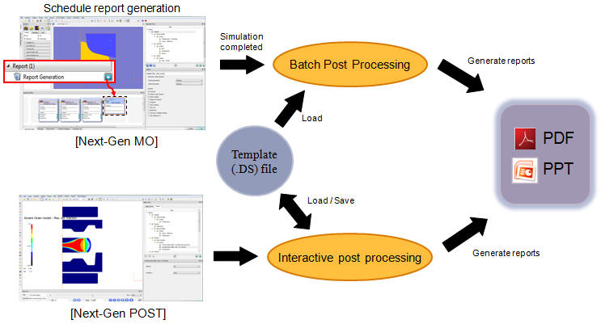
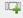
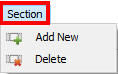
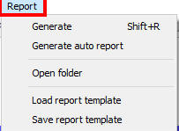

Report generation feature in MO and Next Gen Post helps user to generate report automatically with contour plots for selected state variables, point tracking, load – stroke graphs, .. etc. The report can be saved in pdf format ( 2D & 3D) or as an ppt file. We can generate the report either as interactive mode or batch mode (See Fig. 27.1.).

Report generation setup
In Batch post mode : After completion of setup of all operations, add Report generation operation from Explorer operation list. Complete the report generation setup and run simulation. After completion of simulation of all operations prior to report generation, report generation operation will start to generate report for the selected state variables and graphs.
In Interactive batch mode : In Next Gen post from Report tab we can generate the report by selecting required state variables and graphs or . DS file can also be used to generate report.
Section Menu: User defined custom sections can be added and deleted by using the

(Add new section) and (Delete section) under Section tab also using tool bar icons. See Fig. 27.2.

Section Menu
Report Menu: Below are the options available under Report tab as shown in Fig. 27.3.,

Report Menu
Generate: This option is used to generate the report for the added chapter under Report tab. Also for the imported loaded report template report can be generated using this option.
Generate Auto report : It will generate auto report with generate the report by using the default section of metal flow, state variable plot with Stress-Effective, Strain-Effective and Temperature state variables, Stroke V/S Load Graph and temperature summary plot.
Open Folder : It open the working directory in windows explorer.
Load Report template: Using this option user can import the saved report template (*.ds file).
Save Report template: Using this option user can save the report data to a template (*.ds file).
MikTex: From DEFORM v12.0., MikTex software is used to generate Report in DEFORM.
In Generate PDF file, now user can observe the Contents of each chapter, Summary summary of each operation and object/s data and each section output. For more information related generated report refer chapter 28. Report Generation section Generating Report
Related Topics: